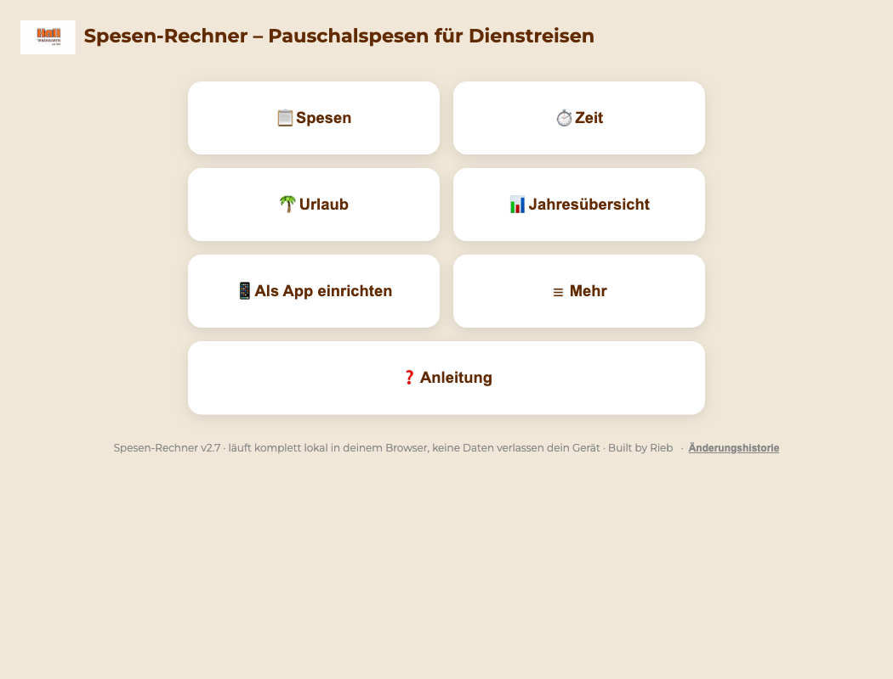
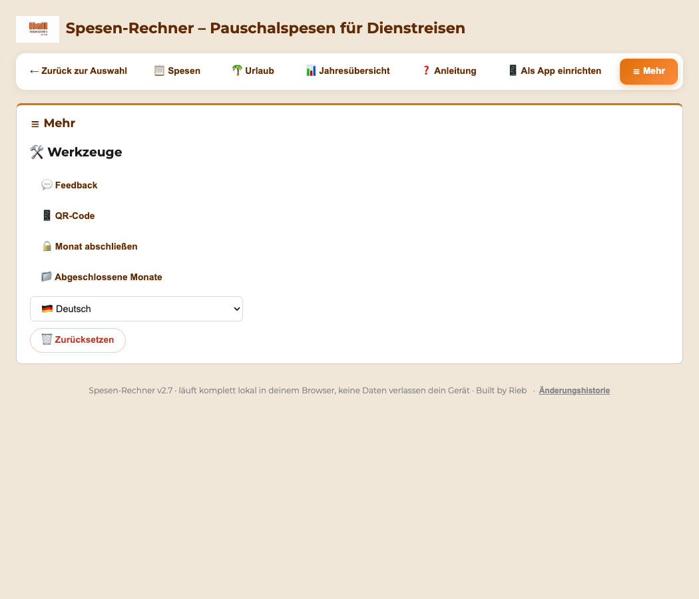

Kurze Schritt-für-Schritt-Anleitung, wie der Spesennachweis ausgefüllt wird.
Alles läuft im Browser, nichts muss installiert werden.
Beim allerersten Öffnen erscheint automatisch ein kurzer 4-Schritte-Einrichtungsassistent
(Name, Straße/Ort/Niederlassung, Fahrer/Monteur, Bundesland) - alles darin lässt sich später jederzeit
ändern (siehe Schritt 2). Nach dem letzten Schritt geht es zurück zur Kachel-Startseite (siehe
Schritt 1) - von dort aus wird dann der gewünschte Bereich angetippt.
🎬 Video-Anleitung (ca. 5 Min.)
Zeigt den kompletten Ablauf einmal von vorne bis hinten – mit gesprochener
Erklärung. Wer lieber liest, findet darunter jeden Schritt einzeln mit Bild.
1. Loslegen: Kachel-Startseite & Werkzeugleiste
Nach dem Öffnen (bzw. nach dem Einrichtungsassistenten) landet man immer zuerst auf der
Kachel-Startseite mit den Hauptbereichen zur Auswahl (Screenshots hier mit einem
Beispiel-Namen aufgenommen, nicht mit echten Mitarbeiterdaten):

📋 Spesen – der eigentliche Spesennachweis: Stammdaten und die Tage-Tabelle (siehe Schritt 2 und 3)
🌴 Urlaub – Jahreskalender mit Urlaubsanspruch und Resttagen (siehe „Extra: Urlaubskalender")
📊 Jahresübersicht – Monats- und Jahressummen auf einen Blick, inkl. Balkendiagramm (siehe Schritt 8)
📱 Als App einrichten – Anleitung zum Einrichten als App auf dem Handy (siehe „Extra: Auf dem Handy –
als App einrichten"). Erscheint nur im Browser, nicht mehr in der bereits installierten App –
dort ist ja nichts mehr einzurichten.
☰ Mehr – bündelt die selteneren Werkzeuge: Feedback, QR-Code, Monat abschließen, Abgeschlossene
Monate, Sprachauswahl und Zurücksetzen (siehe Schritt 9 und 11)
❓ Anleitung – diese Seite hier, direkt im Tool eingebettet
Von jeder dieser Ansichten führt oben „← Zurück zur Auswahl" wieder zurück zur Kachel-Startseite.
Die Werkzeugleiste ändert sich je nach Tab – oben auf 📋 Spesen sieht sie zum Beispiel so aus:
⏰ Zeiten für alle Tage – setzt Abfahrt WP und Ankunft WP in einem Rutsch für jeden Werktag
des Monats, statt jeden Tag einzeln auszufüllen. Vor dem Übernehmen wird angezeigt, wie viele Stunden
und welche Pauschale sich daraus je Tag ergeben. Von Hand eingetragene Tage bleiben unangetastet –
wer einzelne Tage schon korrigiert hat, verliert diese Korrekturen nicht (siehe Schritt 3)
💾 Als PDF speichern – lädt den fertigen Spesennachweis als PDF-Datei herunter
👁️ PDF ansehen – zeigt das PDF erst in einer Vorschau zum Anschauen (lädt nichts herunter); im Vorschau-Fenster kann man es bei Bedarf trotzdem speichern oder direkt drucken
🖨️ Drucken – öffnet dieselbe PDF-Vorschau; dort auf 🖨️ Drucken klicken, dann öffnet sich der Druckdialog. So wird immer genau die fertige 1-Seiten-Fassung gedruckt (nichts wird abgeschnitten)
📧 Per E-Mail an Arbeitgeber weiterleiten – speichert die PDF, öffnet eine vorausgefüllte E-Mail
und markiert den Monat automatisch als eingereicht (siehe Schritt 10)
📄 CSV (für Steuer) – exportiert den Monat zusätzlich als CSV-Datei, praktisch für die eigene Steuerablage
Auf allen anderen Tabs (Urlaub, Jahresübersicht, Anleitung, Als App einrichten, Mehr) gibt es
keine Werkzeugleiste – dort braucht es keine zusätzlichen Knöpfe.
Auf dem Handy ist die Werkzeugleiste kürzer. Im Spesen-Tab bleiben dort nur
„⏰ Zeiten für alle Tage" und „💾 Als PDF speichern" direkt sichtbar – „👁️ PDF ansehen", „🖨️ Drucken",
„📧 Per E-Mail weiterleiten" und „📄 CSV" stecken hinter dem kleinen Knopf „⋯ Mehr" am rechten Rand
der Werkzeugleiste. Ein Antippen klappt sie auf (der Knopf wird dann zu „⋯ Weniger"). Das ist nicht
dasselbe wie die Hauptkategorie „☰ Mehr" weiter unten in der Tab-Leiste: „⋯ Mehr" ist nur ein
eingeklappter Rest der Werkzeugleiste auf schmalen Bildschirmen, „☰ Mehr" ist ein eigener vollwertiger
Bereich mit ganz anderen Werkzeugen (Feedback, QR-Code, Monat abschließen, Abgeschlossene Monate, Sprache,
Zurücksetzen – siehe Schritt 9 und 11). Am Rechner bleibt die Werkzeugleiste ohnehin komplett sichtbar,
„⋯ Mehr" erscheint dort gar nicht erst.
2. Stammdaten (einmalig ausfüllen)
Die Stammdaten stehen im 📋 Spesen-Tab immer direkt oben – kein Knopf zum Anklicken mehr nötig.
Ganz oben zuerst den Mitarbeitertyp wählen:
Fahrer – trägt „Abfahrt WP" / „Ankunft WP" ein (Fahrten von/nach Hause); „besuchte Orte" steht standardmäßig auf „lt. Tourenplan"
30 Minuten Pause: Werden bei Fahrern und Monteuren automatisch von den Tagesstunden abgezogen.
Am Bildschirm ist das mit „*" markiert – auf dem gedruckten/gespeicherten PDF erscheint das „*" bewusst nicht.
Danach Name, Straße, Ort, Niederlassung und – falls gewünscht – die E-Mail-Adresse des Arbeitgebers eintragen
(nur nötig für den „Per E-Mail weiterleiten"-Button). Bundesland auswählen, damit Feiertage automatisch stimmen.
Tipp: Wer jeden Tag zur gleichen Zeit anfängt/aufhört, kann das bei „Abfahrt WP (Standard)" /
„Ankunft WP (Standard)" (bzw. „Arbeitsbeginn/Arbeitsende" bei Monteuren) einmal eintragen – das füllt dann
automatisch alle Wochentage aus. Einzelne Tage lassen sich unten in der Tabelle trotzdem jederzeit ändern.
Direkt unter den Stammdaten – einfach herunterscrollen, kein Umschalten mehr nötig – folgt die
Tage-Tabelle:
Alle Eingaben werden nur lokal im eigenen Browser gespeichert – nichts wird hochgeladen.
3. Tageszeiten eintragen
⏰ Der schnelle Weg zuerst: Wer fast jeden Tag zur selben Zeit losfährt und
zurückkommt, muss das nicht zwanzig Mal eintippen. Der Knopf ⏰ Zeiten für alle Tage oben in der
Werkzeugleiste setzt Abfahrt WP und Ankunft WP für jeden Werktag auf einmal. Vor dem Übernehmen
wird angezeigt, wie viele Stunden und welche Pauschale daraus je Tag werden. Einzelne Tage lassen sich
danach wie unten beschrieben trotzdem abweichend ändern – diese Änderungen bleiben erhalten, auch
wenn die Standardzeiten später noch einmal geändert werden.
Einfach zur Tabelle unter den Stammdaten herunterscrollen (siehe Schritt 2). Für jeden Arbeitstag auf das
Uhrzeit-Feld in der Zeile Abfahrt WP (bzw. Arbeitsbeginn) bzw. Ankunft WP (bzw. Arbeitsende)
tippen/klicken. Es öffnet sich ein Dreh-Rad zur Uhrzeit-Auswahl – wie bei einer iPhone-Uhr:
Stunde und Minute lassen sich mit der Maus, dem Mausrad/Trackpad oder am Handy/Tablet mit dem Finger auf die
gewünschte Zeile schieben – die Mitte (orange umrandet) zeigt die aktuell ausgewählte Uhrzeit. Mit
Übernehmen bestätigen oder mit Abbrechen das Fenster ohne Änderung schließen.
Auch per Tastatur bedienbar: Pfeiltasten hoch/runter bewegen die ausgewählte Walze, Zahlen eintippen
springt direkt zur gewünschten Uhrzeit (z.B. „1" dann „5" für 15), Enter übernimmt, Escape
bricht ab.
Std. und Pauschale berechnen sich danach automatisch:
„Anwesenheit in NL" und „besuchte Orte" lassen sich ebenfalls anpassen, falls nötig.
⚠️ Hinweis-Symbole: Ein kleines ⚠️ neben der Uhrzeit zeigt an, dass für einen Werktag noch gar keine
Zeit eingetragen ist (einfach ignorieren, falls der Tag noch bewusst offen ist). Ein rot hinterlegtes
Std.-Feld mit ⚠️ warnt vor einer langen Arbeitszeit (über 10 Std.) - die Symbole selbst sind rein
informativ und erscheinen nicht im Ausdruck/PDF.
⛔ Wichtig - 10-Stunden-Grenze: Ein Arbeitstag über 10 Stunden wird nicht genehmigt. Solange ein
Tag darüber liegt, lässt sich der Nachweis nicht speichern, drucken oder per E-Mail versenden -
das Tool nennt den betroffenen Tag und bittet, die Uhrzeiten erst unter 10 Std. zu bringen.
ℹ️ Pauschale erst ab 8,5 Std: Eine Pauschale gibt es nur, wenn an einem Tag mindestens 8,5 Stunden
erreicht werden - kürzere Tage bringen keine Pauschale. Oben über der Tabelle steht dazu ein Info-Hinweis;
er erscheint bewusst nur im Tool, nicht auf dem gedruckten Spesenblatt.
Zwei Leerfelder unter jedem Freitag: Nach jeder Woche stehen zwei leere Tages-Kästchen als Puffer -
z.B. um einen durch einen Feiertag unter der Woche ausgefallenen Tag am Samstag auszugleichen, ohne extra
eine Samstagszeile anlegen zu müssen. Genau wie im Original-Vordruck.
4. Status auswählen
Ganz rechts in jeder Zeile steht der aktuelle Status als Text, darunter ein Auswahlmenü zum Ändern:
Arbeitstag – Standard, wenn Zeiten eingetragen sind
Urlaub, Krank, Frei, Sonderurlaub, Elternzeit – für alle anderen Tage einfach auswählen,
die Zeiten-Felder werden dann ausgeblendet
Die ganze Status-Spalte (Auswahlmenü und Text) erscheint bewusst nicht im gedruckten/gespeicherten PDF – das offizielle Spesenblatt bleibt schlank. Bei ganztägigen Einträgen wie Urlaub oder Krank steht die Info aber weiterhin mittig in der Zeile.
5. Anwesenheit in der Niederlassung (NL)
In den Stammdaten (siehe Schritt 2), im Abschnitt „🏢 Anwesenheit in der Niederlassung (NL)", lässt sich festlegen,
an welchem festen Wochentag automatisch eine Anwesenheitszeit in der Niederlassung eingetragen wird
(z.B. jeden Montag zur Teambesprechung):
Aktiv an einem festen Wochentag – Häkchen setzen, um die automatische Eintragung zu aktivieren
Wochentag – Montag bis Samstag einzeln oder „Alle Wochentage (Mo–Fr)" wählbar
(Samstag für seltene Fälle; Sonntag ist bewusst nicht dabei)
Von / Bis – die Uhrzeit der Anwesenheit, per Dreh-Rad einstellbar (siehe Schritt 3)
Diese Einstellung gilt für Fahrer und Monteure. Wer Mo–Fr in der Niederlassung ist
(z.B. Monteure): Häkchen setzen, Wochentag „Alle Wochentage (Mo–Fr)" wählen und Von/Bis eintragen –
dann wird „Anwesenheit in NL" an jedem Werktag automatisch ausgefüllt.
Extra: Samstag hinzufügen (optional)
Normalerweise erscheint auf dem Spesenblatt kein Samstag - unter jedem Freitag stehen stattdessen die zwei
leeren Puffer-Felder (siehe Schritt 3). Wer trotzdem einen Samstag als eigene Tages-Zeile braucht,
aktiviert ihn ausschließlich über die Stammdaten (siehe Schritt 2) - auf dem Spesenblatt selbst gibt es dafür
bewusst keinen Knopf:
In den Stammdaten im Abschnitt „📅 Zeitraum & Feiertage" das Häkchen bei
„Samstag als Tages-Zeile hinzufügen" setzen
Ab sofort erscheint der Samstag automatisch direkt unter dem jeweiligen
Freitag in einem eigenen, leeren Tages-Kästchen (mit „SA"), das sich wie jeder andere Tag ausfüllen lässt
Häkchen wieder entfernen = der Samstag verschwindet wieder, und unter dem Freitag stehen
erneut nur die zwei leeren Puffer-Felder. Standardmäßig ist die Option aus. Sonntag lässt sich nicht
hinzufügen.
6. Abwesenheiten am Stück eintragen
Statt Urlaub, Krankheit o.ä. Tag für Tag einzeln umzustellen (Schritt 4), lässt sich das auch für einen
ganzen Zeitraum auf einmal erledigen: in den Stammdaten (siehe Schritt 2), im Abschnitt „Abwesenheiten am Stück
eintragen", Status, Von- und Bis-Datum wählen und auf „Eintragen" klicken:
Der Zeitraum darf auch über mehrere Wochen oder Monate gehen. Einzelne Tage darin lassen sich in der Tabelle
trotzdem noch abweichend ändern.
Mehrere getrennte Zeiträume möglich: nach „Eintragen" werden Von/Bis automatisch geleert (der Status
bleibt stehen) - so lässt sich direkt danach ein zweiter, unabhängiger Zeitraum eintragen, auch im selben
Monat und auch mit einem anderen Status (z.B. erst eine Woche Urlaub, danach zwei Tage Krank). Darunter
erscheint eine Liste aller aktuell eingetragenen Zeiträume, die sich einzeln über das ✕ wieder
entfernen lassen:
7. Unterschreiben
Ganz unten im Formular gibt es zwei Unterschriftenfelder (Mitarbeiter und Niederlassungsleiter). Sie setzen dort
ein Foto oder einen Scan Ihrer echten, handschriftlichen Unterschrift ein – über den Knopf
📷 Foto/Scan im jeweiligen Feld:
Am Computer: auf „📷 Foto/Scan" klicken und eine Bilddatei Ihrer Unterschrift auswählen.
Am Handy oder Tablet: auf „📷 Foto/Scan" tippen und die Unterschrift direkt abfotografieren
oder ein vorhandenes Foto aus der Mediathek wählen.
Die Unterschrift wird automatisch gespeichert und bleibt für alle künftigen Monate erhalten – man muss sie nicht
jeden Monat neu einsetzen. Über das kleine ✕ oben rechts im Feld lässt sie sich wieder entfernen. Sie wird
außerdem in der Datensicherung mitgespeichert.
Unter jeder Unterschrift erscheint automatisch „unterschrieben am TT.MM.JJJJ um HH:MM" -
das gibt der Unterschrift echten Beweischarakter und wird auch mit ins PDF übernommen.
✍️ Wichtig: Vor dem Speichern, Drucken oder E-Mail-Versand erscheint ein Hinweis,
dass die handschriftliche Unterschrift (Foto/Scan) eingefügt sein muss – andernfalls den Ausdruck von Hand
unterschreiben. Das gilt für Fahrer und Monteure gleichermaßen.
8. Jahresübersicht
Über die Kachel/den Tab 📊 Jahresübersicht lässt sich der komplette Jahresverlauf auf
einen Blick einsehen: ein Balkendiagramm der Pauschale je Monat, dazu Arbeitstage und Pauschale-Summe je
Monat sowie die Anzahl der Urlaubs-, Krankheits-, Sonderurlaubs- und Elternzeit-Tage – mit Gesamtzeile
fürs ganze Jahr:
Extra: 🌴 Urlaubskalender (optional)
Über die Kachel/den Tab 🌴 Urlaub öffnet sich ein Jahreskalender mit Urlaubskonto.
Anders als die Arbeitszeit arbeitet der Urlaubskalender mit
denselben Daten wie die Abrechnung. Was hier eingetragen wird, steht sofort auch im
Monatsformular und in der Jahresübersicht (Schritt 8) – und umgekehrt. Urlaub muss also nur
einmal erfasst werden, egal an welcher Stelle.
Urlaubstage pro Jahr – der eigene Anspruch; der ist von Mitarbeiter zu Mitarbeiter
verschieden und wird deshalb selbst eingetragen
Übertrag aus dem Vorjahr – Resturlaub, der mitgenommen wurde
Die drei Kacheln zeigen Anspruch, Eingetragen und Rest. Wird mehr
eingetragen als zusteht, erscheint eine Warnung.
Eintragen – auf drei Wegen:
Als Zeitraum – Von und Bis wählen, dann auf Eintragen. Vorher wird angezeigt,
wie viele Arbeitstage das sind.
Als einzelner Tag – nur das Von-Feld ausfüllen, Bis leer lassen
Direkt im Kalender – einfach auf einen Tag klicken; noch einmal klicken macht ihn
wieder zum normalen Arbeitstag
Außer Urlaub lassen sich auch Krank, Frei, Sonderurlaub und Elternzeit
eintragen – dafür oben unter „Was" umstellen. Mit „↩️ Wieder normaler Arbeitstag" wird ein
Zeitraum wieder geleert.
Gezählt werden nur Montag bis Freitag, gesetzliche Feiertage des
eingestellten Bundeslandes zählen nicht mit. Trägt man z.B. eine Woche mit einem Feiertag ein,
werden nur 4 Urlaubstage verbraucht. Wochenenden und Feiertage werden dabei gar nicht erst
als Urlaub markiert – ein Klick darauf sagt einem das auch.
Extra: 📱 Auf dem Handy – als App einrichten (optional)
Auf der Kachel-Startseite (siehe Schritt 1) gibt es dafür eine eigene Kachel/einen eigenen Tab
📱 Als App einrichten mit genau dieser Anleitung – sie erscheint nur im Browser, nicht mehr
in der bereits installierten App, da dort nichts mehr einzurichten ist. Kurz zusammengefasst: eigenes
Symbol auf dem Startbildschirm, eigenes Fenster ohne Browserleiste, und die App funktioniert dann auch
ohne Empfang – im Lager, im Lkw, im Funkloch.
iPhone (Safari):
Safari öffnen – nicht Chrome, nur Safari kann das
hall-spesen-rechner.de eingeben
Unten auf das Teilen-Symbol (Quadrat mit Pfeil nach oben)
Nach unten wischen → „Zum Home-Bildschirm" → mit „Hinzufügen" bestätigen
Android (Chrome): Beim Öffnen der Adresse meldet sich der Browser meist von selbst mit
„App installieren". Falls nicht: Menü (drei Punkte) → „Zum Startbildschirm hinzufügen".
Nichts geht verloren, nichts wird doppelt. Die App ist dieselbe Seite –
Ihre Abrechnung, Arbeitszeiten und Urlaubstage sind darin dieselben wie im Browser. Es entsteht
kein zweiter Datenbestand. Sie können also frei wechseln.
Halten Sie das Symbol gedrückt, springen Sie direkt zu Arbeitszeit oder
Urlaub, ohne erst zu suchen.
Extra: 📱 Die Tages-Ansicht auf dem Handy
Das Spesenblatt bildet den Original-Vordruck nach und ist dadurch breiter als ein
Handy-Display. Auf dem Papier ist das richtig so – zum Ausfüllen unterwegs wäre es
unbrauchbar, weil man jede Zeile seitlich schieben müsste.
Deshalb zeigt die App auf dem Handy statt der breiten Tabelle eine Karte je Tag:
Oben Tag und Datum, rechts die Pauschale für diesen Tag
Darunter Abfahrt und Ankunft als große Felder – antippen öffnet wie gewohnt
das Zeitrad (siehe Schritt 3)
Orte zum Eintippen
Unten die gerechneten Stunden und die Status-Auswahl (Urlaub, Krank, …)
Wichtig – für die Abgabe ändert sich nichts. Die Karten sind nur
die Eingabe-Ansicht. PDF, Drucken und E-Mail liefern weiterhin exakt den gewohnten
Vordruck, so wie ihn Ihr Vorgesetzter kennt. Es ist dasselbe Blatt, nur anders
dargestellt – Sie tragen einmal ein, und beides ist gefüllt.
Die Tages-Ansicht erscheint nur in der installierten App. Wer die
Adresse ganz normal im Browser öffnet – auch auf dem Handy – sieht weiterhin den gewohnten
Vordruck.
Zur Werkzeugleiste auf dem Handy siehe Schritt 1 – dort steht auch, warum das kleine „⋯ Mehr" am Rand
der Werkzeugleiste etwas anderes ist als die Hauptkategorie „☰ Mehr" in der Tab-Leiste.
9. Datensicherung
Da alle Daten ausschließlich lokal im eigenen Browser gespeichert werden (siehe Datenschutz-Hinweis in
Schritt 2), gehen sie beim Löschen des Browser-Verlaufs oder einem Gerätewechsel sonst unwiderruflich
verloren. In den Stammdaten (siehe Schritt 2), im Abschnitt „💾 Datensicherung":
Backup als Datei speichern – sichert alles (Einstellungen, alle Monate, beide Unterschriften) als Datei
Backup wiederherstellen – liest eine zuvor gespeicherte Backup-Datei wieder ein, auch auf einem
anderen Gerät oder Browser
Empfehlung: regelmäßig ein Backup speichern, z. B. einmal im Monat – besonders
vor dem Klick auf „🗑️ Zurücksetzen" (zu finden im Bereich ☰ Mehr, siehe Schritt 1 und 11).
10. Monat abschließen
Sobald ein Monat fertig ausgefüllt und eingereicht ist, lässt er sich sperren - das verhindert versehentliches
Nachbearbeiten. Das passiert automatisch beim Klick auf 📧 Per E-Mail an Arbeitgeber weiterleiten
im Spesen-Tab (siehe Schritt 1), oder manuell über 🔒 Monat abschließen im Bereich ☰ Mehr
(siehe Schritt 1 und 11 – z.B. wer stattdessen ausdruckt und persönlich abgibt):
Ein grüner Banner zeigt Datum und Uhrzeit der Einreichung, alle Zeitfelder/Status/Orte-Eingaben in der
Tabelle sind währenddessen gesperrt (leicht abgeblendet). Über 🔓 Wieder öffnen im Banner lässt sich
der Monat jederzeit wieder zur Bearbeitung freigeben.
Automatische Ablage: Beim Abschließen über 🔒 Monat abschließen wird die
fertige PDF (Spesennachweis_Monat_Jahr.pdf) automatisch als Datei gespeichert. So liegt jeder
abgeschlossene Monat auch rückwirkend als Datei vor - praktisch für die eigene Steuer-/Jahresablage.
11. Abgeschlossene Monate
Über 📁 Abgeschlossene Monate im Bereich ☰ Mehr (siehe Schritt 1) lässt sich jederzeit einsehen, welche Monate
bereits eingereicht wurden - über alle Jahre hinweg, nicht nur den aktuell eingestellten Zeitraum:

Jeder Monat zeigt die Gesamtpauschale und den genauen Einreichungs-Zeitpunkt
👁️ Ansehen springt direkt zu diesem Monat (wechselt bei Bedarf automatisch Jahr/Zeitraum)
📄 PDF zeigt den Monat an und lädt sofort erneut die PDF herunter
Wichtig bei Gerätewechsel: Abgeschlossene Monate sind - wie alle Daten in diesem Tool - nur lokal in
diesem Browser gespeichert. Direkt in diesem Panel gibt es deshalb auch den Button 📦 Backup als Datei
speichern (identisch zu Schritt 9) - vor einem Geräte- oder Browserwechsel unbedingt nutzen, damit
vergangene Monate nicht verloren gehen.
12. Fertigstellen
Wenn der Monat komplett ausgefüllt ist:
👁️ PDF ansehen klicken, um das Ergebnis erst nur anzuschauen (ohne Download), oder
💾 Als PDF speichern klicken, um die fertige Datei direkt herunterzuladen, oder
📧 Per E-Mail an Arbeitgeber weiterleiten klicken – die PDF wird automatisch heruntergeladen und
eine E-Mail mit Betreff/Text vorausgefüllt geöffnet. Die heruntergeladene PDF muss dort nur noch angehängt
werden (das kann der Browser aus Sicherheitsgründen nicht automatisch). Der Monat wird dabei automatisch
als eingereicht markiert (siehe Schritt 10).
📧 Nur einmal senden: Jeder Monat wird normalerweise nur einmal versendet. Möchten Sie
denselben Monat noch einmal senden – etwa weil sich ein Fehler eingeschlichen hat – kommt zuerst eine Rückfrage.
Bestätigen Sie, gilt die neue Fassung als Korrektur und ist im E-Mail-Betreff mit „(Korrektur)" gekennzeichnet,
sodass sie die vorherige eindeutig ersetzt.